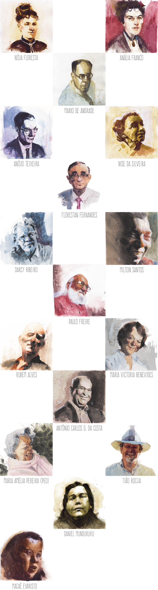

Movimientos del alma brasileña

Educadores de alma brasileña
Momentos del alma brasileña

La educación brasileña está marcada por una secuencia de rupturas y contradicciones que dificultan la construcción de un proyecto claro para el futuro e incluso la comprensión de lo sucedido, pero es esencial conocer nuestro pasado y nuestra gente para crear una educación que sea verdaderamente nuestra, que sea capaz de superar la exclusión y la violencia. Que esté en diálogo con lo que somos.
Rompiendo con las propuestas de homogeneización, varios educadores brasileños se unieron creando prácticas y políticas que afirman nuestra alma y crean algo original, una educación dialógica, emancipadora y democrática. Contar algunas de estas educaciones es el enfoque de Educação de Alma Brasileira.
Reconocer algunas de nuestras principales características, historias, experiencias y educadores que marcaron nuestra educación para poder construir el futuro. El libro Educación de Alma Brasileña inicia un diálogo sobre cómo sería una educación de nuestra gente, nuestra cultura y nuestra historia.